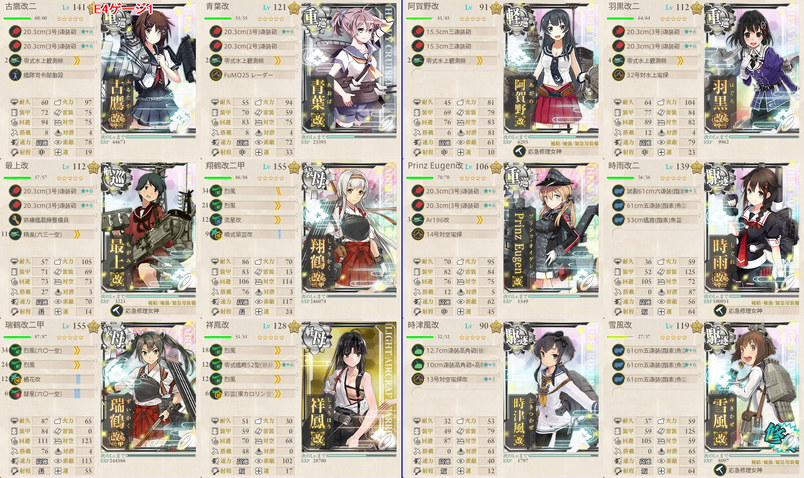
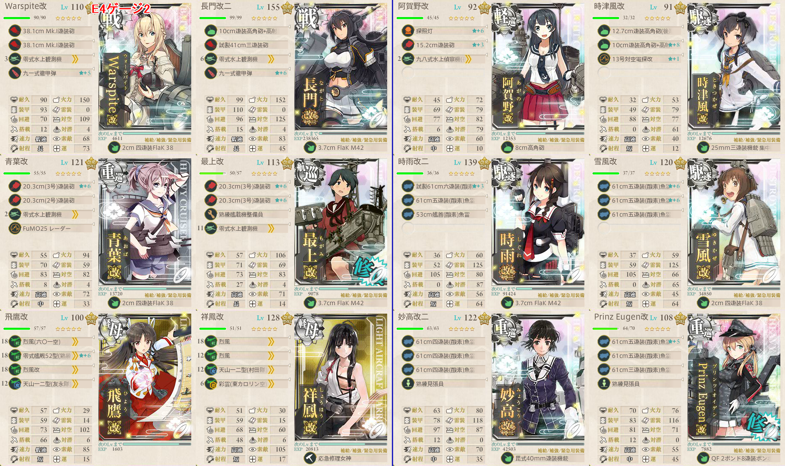

【艦これ】西方再打通！欧州救援作戦 E4
難易度：乙
ゲージ１
構成

- 第一艦隊の重巡航巡は１隻戦艦と入れ替えられる
出撃ログ（乙）
| 回数 | 編成 | ルート | 戦果 | |
|---|---|---|---|---|
| 1 | 第一 | 古鷹 青葉 最上 翔鶴 瑞鶴 祥鳳 | ABCGHI | C青葉大破 時津風退避 A勝利（風雲） |
| 第二 | 阿賀野 羽黒 Prinz Eugen 時雨 時津風 雪風 | |||
| 2 | 第一 | 古鷹 青葉 最上 翔鶴 瑞鶴 祥鳳 | ABCGHI | S勝利（水無月） |
| 第二 | 阿賀野 羽黒 Prinz Eugen 時雨 時津風 雪風 | |||
| 3 | 第一 | 古鷹 青葉 最上 翔鶴 瑞鶴 祥鳳 | ABCGHI | S勝利（舞風） |
| 第二 | 阿賀野 羽黒 Prinz Eugen 時雨 時津風 雪風 | |||
| 4 | 第一 | 古鷹 青葉 最上 翔鶴 瑞鶴 祥鳳 | ABCGHI | S勝利（高雄） ゲージ破壊 |
| 第二 | 阿賀野 羽黒 Prinz Eugen 時雨 時津風 雪風 | |||
敵編成
| マス | 敵航空戦力 | 敵潜水艦 | 備考 |
|---|---|---|---|
| A | なし | なし | 重巡1 軽巡1 ツ級1 駆逐3 |
| B | あり | なし | 軽空母1 軽巡1 駆逐3 補給1 輪形陣 |
| C | なし | なし | 戦艦4 駆逐2 単縦陣 |
| I | あり | なし | 連合艦隊 460～472＋航空隊で優勢 |
ゲージ2
構成

- 小鬼対策として補強増設欄に機銃を採用
出撃ログ（乙）
| 回数 | 編成 | ルート | 戦果 | |
|---|---|---|---|---|
| 1 | 第一 | Warspite 長門 青葉 最上 飛鷹 祥鳳 | DGHJKMN | A勝利（龍田） |
| 第二 | 阿賀野 羽黒 Prinz Eugen 時雨 時津風 雪風 | |||
| 2 | 第一 | Warspite 長門 青葉 最上 飛鷹 祥鳳 | DGHJKMN | A勝利（陸奥） |
| 第二 | 阿賀野 羽黒 Prinz Eugen 時雨 時津風 雪風 | |||
| 3 | 第一 | Warspite 長門 青葉 最上 飛鷹 祥鳳 | DGHJ | 雪風大破 |
| 第二 | 阿賀野 羽黒 Prinz Eugen 時雨 時津風 雪風 | |||
| 4 | 第一 | Warspite 長門 青葉 最上 飛鷹 祥鳳 | DGHJ | 時津風大破 |
| 第二 | 阿賀野 羽黒 Prinz Eugen 時雨 時津風 雪風 | |||
| 5 | 第一 | Warspite 長門 青葉 最上 飛鷹 祥鳳 | DGHJKMN | A勝利（Z1） |
| 第二 | 阿賀野 羽黒 Prinz Eugen 時雨 時津風 雪風 | |||
| 6 | 第一 | Warspite 長門 青葉 最上 飛鷹 祥鳳 | DGHJKMN | A勝利（熊野） |
| 第二 | 阿賀野 羽黒 Prinz Eugen 時雨 時津風 雪風 | |||
| 7 | 第一 | Warspite 長門 青葉 最上 飛鷹 祥鳳 | DGHJKM | 祥鳳大破 |
| 第二 | 阿賀野 羽黒 Prinz Eugen 時雨 時津風 雪風 | |||
| 8 | 第一 | Warspite 長門 青葉 最上 飛鷹 祥鳳 | DGHJKMN | A勝利（沖波） |
| 第二 | 阿賀野 羽黒 Prinz Eugen 時雨 時津風 雪風 | |||
| 9 | 第一 | Warspite 長門 青葉 最上 飛鷹 祥鳳 | DGHJKMKN | A勝利（利根） |
| 第二 | 阿賀野 羽黒 Prinz Eugen 時雨 時津風 雪風 | |||
| 10 | 第一 | Warspite 長門 青葉 最上 飛鷹 祥鳳 | DGHJKMN | A勝利（利根） |
| 第二 | 阿賀野 時津風 時雨 雪風 妙高 Prinz Eugen | |||
| 11 | 第一 | Warspite 長門 青葉 最上 飛鷹 祥鳳 | DGHJKMN | A勝利（神通） |
| 第二 | 阿賀野 時津風 時雨 雪風 妙高 Prinz Eugen | |||
| 12 | 第一 | Warspite 長門 青葉 最上 飛鷹 祥鳳 | DGHJKMN | S勝利（青葉） ゲージ破壊 |
| 第二 | 阿賀野 時津風 時雨 雪風 妙高 Prinz Eugen | |||
敵編成
| マス | 敵航空戦力 | 敵潜水艦 | 備考 |
|---|---|---|---|
| D | なし | あり | 潜水艦のみ |
| J | なし | なし | PT小鬼6 梯形陣 |
| K | あり | なし | 空襲戦 姫3 補給3 441～442で確保 341～355で優勢 |
| M | なし | なし | 重巡1 戦艦2 ネ級1 PT小鬼2 単縦陣 ラスダン時は旗艦がリ改になる |
| N | あり | なし | 連合艦隊 紫駆逐1 ツ級1 軽巡1 駆逐3 ＋ 戦艦仏姫1 戦艦2 軽空母1 紫駆逐2 332～344＋航空隊で優勢 389～397＋航空隊で確保 |
- 戦艦仏姫はHP730
- 作戦難易度によって装甲がかなり変わるため、自信がなければ丙作戦を